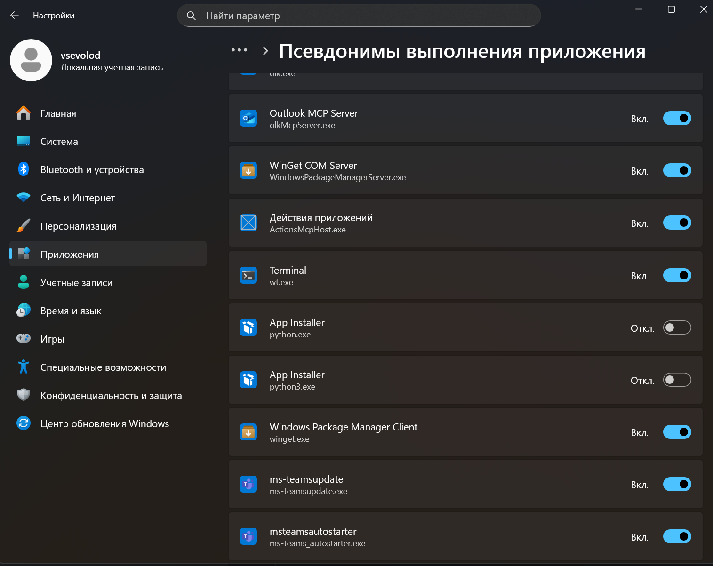

Урок 16. Установка модулей и minecraft
Зачем нужны модули?
При помощи какого пакетного менеджера устанавливаются модули?
Можно ли задать версию модуля при установке? Зачем это нужно?
О дивный новые мир - Minecraft
Установка
Установка minecraft:
- Скачайте Prism лаунчер по ссылке
- Установите лаунчер
- Закройте лаунчер
- Выполните команду в командной строке:
echo {"accounts": [{"entitlement": {"canPlayMinecraft": true,"ownsMinecraft": true},"type": "MSA"}],"formatVersion": 3} > %appdata%/PrismLauncher/accounts.json
- Откройте лаунчер
- Создайте оффлайн аккаунт
- Установить Minecraft 1.12.2 с forge
Установка mcpipy:
- Скачайте mods по ссылке
- jar файл из mods/1.12.2 добавьте в папку mods minecraftа
- Скачайте python-scripts по ссылке
- Папке python-scripts/mcpipy скопируйте в корневую папку minecraftа
Проверка выполнения:
- Запустите minecraft
- Выполните
/py helloworld - Скорее всего у вас может возникнуть одна из проблем перечисленных ниже
Возможные проблемы при запуске
Выводится Python was not found; run without arguments to install from the Microsoft Store, or disable this shortcut from Settings
Для этого надо отключить эти галочки в Псевдонимы выполнения приложения

Выводится красным текстом cannot run program python error=2, no such file or directory
Для этого надо добавить Python в переменную окружения Path. Инструкция
Выводится ошибка module Collections has not attribute Iterable
Это происходит из-за того, что mcpipy писался для более старых версий Python.
Просто найдите глобальным поиском все файлы, где используется Iterable и замените import collections на import collections.abc as collections
Пишем код
Hello world
- Создайте файл
example.pyв папкеmcpipy - Напишите в него следующий код:
- Напишите в minecraft
/py example - У вас должно вывестись
Hello worldв чат
Получаем позицию игрока
Выведется что-то вроде:
Это координаты вашего игрока по осям (x, y, z)
Создаем блоки
from mine import *
mc = Minecraft()
pos = mc.player.getPos()
mc.setBlock(pos, 1) # pos - координаты, где поставить блок. 1 - идентификатор блока, в нашем случае - камень
Прям в ногах должен создаться блок камня
Если мы хотим создать его рядом с нами, то мы можем написать следующий код
from mine import *
from mcpi.vec3 import Vec3
mc = Minecraft()
pos = mc.player.getPos()
block_pos = pos + Vec3(1, 0, 0)
mc.setBlock(block_pos, 1)
Либо можем обойтись без векторов:
from mine import *
from mcpi.vec3 import Vec3
mc = Minecraft()
pos = mc.player.getPos()
mc.setBlock(pos.x + 1, pos.y, pos.z, 1)
Проверяем, какой блок стоит под нами
from mine import *
from mcpi.vec3 import Vec3
mc = Minecraft()
pos = mc.player.getPos()
block_pos = pos + Vec3(0, -1, 0)
block_id = mc.getBlock(block_pos)
mc.postToChat(f'Block under: {block_id}')
Ставим много блоков
setBlocks принимает 2 координаты. Координату начала и конца. Все между ними заполняет блоками